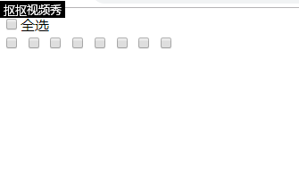

2019-08-17
要求：
1.点击全选按钮时，所有的单击按钮全部被选中；取消时，单击按钮全部被取消。
2.全选按钮选中时，取消任何一个单击选项按钮时，全选按钮取消选中。
3.所有的单击按钮都选中时，全选按钮自动选中。
<!DOCTYPE html>
<html>
<head>
<meta charset="UTF-8">
<title></title>
</head>
<body>
<input type="checkbox" name="all"/>全选<br />
<input type="checkbox" name="one"/>
<input type="checkbox" name="one"/>
<input type="checkbox" name="one"/>
<input type="checkbox" name="one"/>
<input type="checkbox" name="one"/>
<input type="checkbox" name="one"/>
<input type="checkbox" name="one"/>
<input type="checkbox" name="one"/>
<script type="text/javascript">
//获取所有相关的元素
var all = document.getElementsByName("all")[0];
var one = document.getElementsByName("one");
//首先给全选按钮绑定一个点击事件
all.onclick = function(){
//然后遍历所有的单击按钮
for (var i = 0; i < one.length; i++) {
one[i].checked = this.checked;
//当全选按钮被选中时，所有的单击按钮也都被选中；当全选按钮没点击时，所有单击按钮取消选中
}
}
//接着给所有的单击按钮one注册一个单击事件
for (var i = 0; i < one.length; i++) {//先遍历所有的单击按钮
one[i].onclick = function(){
for(var j = 0; j < one.length; j++){
//判断是否所有的one都被选中了
//只要有一个没有被选中
if(!one[j].checked){//只要程序到这里执行，说明最少有一个没有被选中
all.checked = false;//只要执行了，程序不需要再往下遍历。
return;
}
}
//当所有的单击按钮都选中时，此时全选按钮也被选中
all.checked = true;
}
}
</script>
</body>
</html>
运行后的效果如下：
